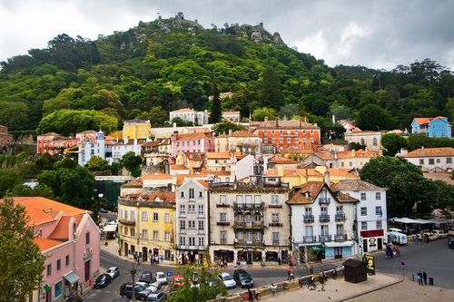

Sobre a Cidade
Sintra é uma vila histórica situada nas colinas da Serra de Sintra, famosa pelos seus palácios, jardins e paisagens românticas. Classificada como Património Mundial pela UNESCO, combina natureza, arquitetura e história num cenário único em Portugal.